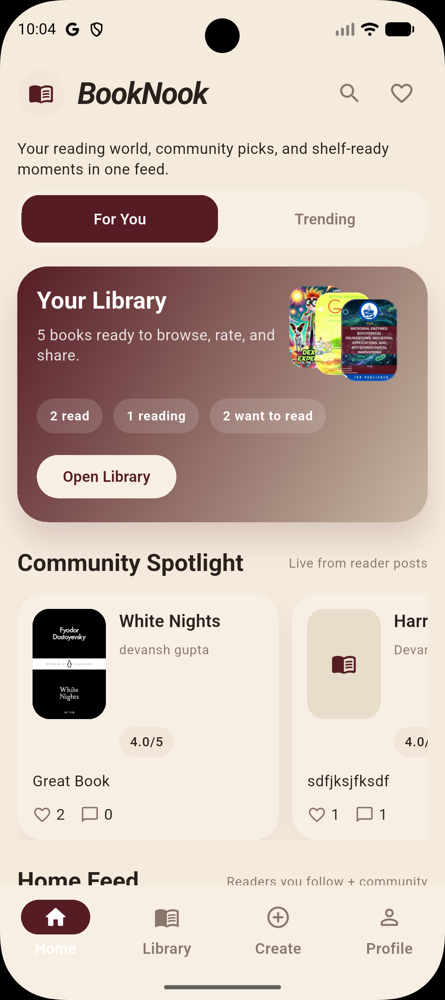
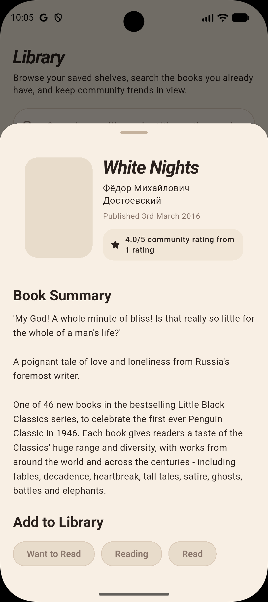
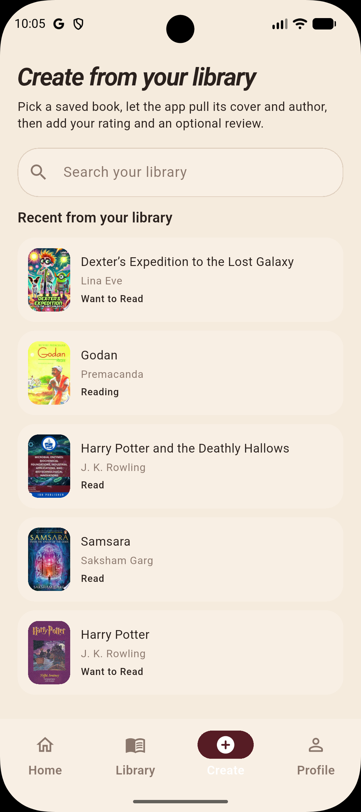
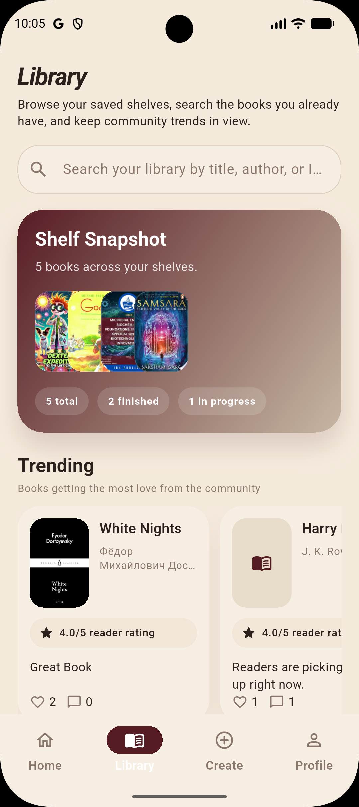

Visual book discovery
A moodboard-style feed makes book hunting feel scrollable, fast, and personal instead of flat or overwhelming.
Android app for modern readers
BookNook helps new readers discover books fast, save them to shelves, share quick thoughts, and follow people with similar taste. It is built for Android from day one and made to feel visual, personal, and easy on the first scroll.
A more visual reading habit for Android.
Android first
Built for tall screens, quick taps, and a browse flow that feels natural on mobile.

Guest preview
Let new visitors browse the app before they commit and lower the friction to try it.
Why people stay
BookNook focuses on the parts of reading that feel best on a phone: discovering, saving, reacting, and building taste over time.
A moodboard-style feed makes book hunting feel scrollable, fast, and personal instead of flat or overwhelming.
Add a book to Want to Read, Reading, or Finished in a tap so the app feels useful right away.
Leave quick notes, ratings, or mini reviews without forcing people into a long writing flow.
Search by title, author, ISBN, or reader name so discovery feels immediate from the first session.
Turn saved books into a shelf system that feels like yours, not just a plain tracker.
Follow readers whose taste overlaps with yours and keep discovering books through people, not only search results.
How it works
BookNook keeps the first session simple: discover something interesting, save it fast, and come back to a library that already feels personal.
Start with a feed or search result that feels active, visual, and easy to understand without a tutorial.
Move the book into Want to Read, Reading, or Finished with one clear action that feels rewarding on mobile.
Add a quick thought, follow a reader, and let the library and profile start feeling personal.
See the experience
From the first feed to book details, posting, shelves, and profile, each screen makes BookNook feel visual, calm, and easy to keep using on Android.
A clean summary, clear rating, and quick shelf actions help readers decide fast without feeling buried under extra controls.

Pull a saved book into a short posting flow so ratings and reactions feel easy to share instead of like work.

Strong covers, clear shelf names, and visible counts make the app feel worth coming back to.

Profiles combine shelves, taste, and activity so the app feels social, personal, and ready to keep using after the first visit.

Made for Android
BookNook is designed around vertical browsing, quick taps, and a personal reading flow. Every screen is built to feel natural on Android, from the first discovery scroll to the shelves you build over time.
“A reading app should feel obvious before the first save.”
Lead with attractive screens, readable covers, and clean hierarchy so the product feels appealing in two seconds.
New users should be able to spot a book, save it, and understand the app before they ever hit friction.
Shelves, quick notes, and profiles turn a simple install into a reading space that already feels theirs.
Android first
Everything is built around the moments that matter most on a phone: browsing, saving, and coming back to your next read.
The product works best when it feels made for the same fast thumb-driven browsing habits people already use every day.
Let people explore the feed before they fully commit so the first step into the app feels easy.
A clean first session makes it easy to open the app, find a book, and know what to do next without extra friction.
FAQ
BookNook is an Android app for discovering books, saving them to shelves, sharing quick thoughts, and following readers with similar taste.
Yes. BookNook is currently designed for Android, and the full experience is built around that mobile flow.
You can discover books through the feed, search by title or author, save books to shelves, rate or react to them, and build a profile around your reading taste.
Yes. Guest preview lets new users explore the app before they commit to setting everything up.
Tap Download Now to get the Android APK directly and install BookNook right away.
Download BookNook now
Download the latest Android APK directly and start exploring BookNook without waiting for an invite.
Direct APK download for Android devices. If Android asks, allow installs from this source to finish setup.
File included on this site: BookNook-Android.apk